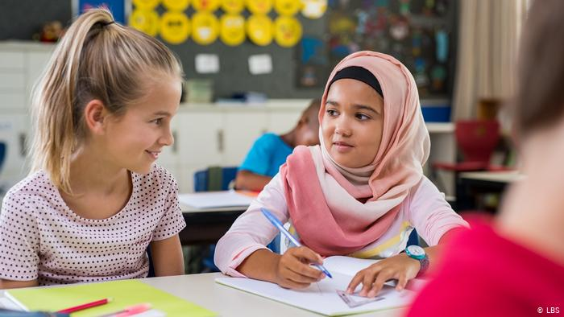

La Inmigración
Problemas sociales que afrontan los refugiados

Los motivos que obligan a una persona a abandonar su hogar y huir pueden ser muy variados. Las guerras, los regímenes dictatoriales, la violencia arbitraria o incluso el cambio climático son algunos ejemplos. Sin embargo, para la mayoría de los refugiados y desplazados del mundo, los problemas no terminan cuando huyen de sus casas.
Estos son algunos de los problemas sociales a los que los refugiados tienen que hacer frente a lo largo y ancho del planeta.
Las dos opciones de dichos movimientos migratorios son: emigración, que es la salida de personas de un país determinado,
para dirigirse a otro distinto e inmigración, que es la entrada en un país determinado procedente de otro.
De manera que una emigración lleva como contrapartida posterior una inmigración en el país de llegada.
Y con respecto a esta última idea hay que aclarar que hasta que un emigrante no llega a un país nuevo no se debe considerar como inmigrante,
cosa que ha venido ocurriendo en los últimos años,
con la gran crisis migratoria en Europa ya que centenares y hasta miles de personas
han venido emigrando de los países conflictivos de África y del Medio Oriente y han muerto
en naufragios y otros accidentes antes de haber llegado
como inmigrantes a los países europeos.
Estos son unos de ellos
1. Integración laboral

En un primer momento, cuando los refugiados llegan a su destino, la sensación de seguridad y de haber evadido el peligro es la más gratificante y poderosa. Sin embargo, aunque muchos vean su situación como algo temporal, surge la necesidad de buscar un trabajo que asegure su subsistencia.
Un estudio publicado en 2016 por la fundación Bartelsmann señalaba que el porcentaje de paro entre la población refugiada de la UE era mayor que entre la población inmigrante y mucho más alta que la población local. “Las políticas del país se centran más en la recepción que en la integración en el mercado laboral”, decía el estudio sobre uno de los grandes retos para los refugiados que logran llegar a Europa.
Por otra parte, numerosos estudios tanto en Europa como en países en vías de desarrollo, demuestran que el efecto de los refugiados en las economías locales es siempre positivo. Los gastos que producen son inferiores a los beneficios que reportan a los países de acogida en forma de impuestos sobre el consumo y productividad laboral.2. Xenofobia y racismo

La discriminación racial o por el país de origen está detrás de muchos casos de desplazamiento forzado. Sudáfrica y el régimen racista apartheid que gobernó hasta 1994 son un ejemplo clásico de un sistema discriminatorio que expulsó a miles de personas de sus hogares. El caso de los rohingya, la minoría étnica expulsada del norte de Myanmar y ayudada por ACNUR en Bangladesh es otro ejemplo más cercano en el tiempo.
Sin embargo, la xenofobia y el racismo siguen siendo un problema social al que los refugiados se enfrentan en algunos de los países de acogida. Esta situación la pueden llegar a sufrir, por poner algunos ejemplos, los colombianos en Ecuador y Costa Rica, los somalíes y congoleños en Kenia o los solicitantes de asilo en diversos países europeos.3.Educación

Para los niños de la cada vez mayor población mundial refugiada el derecho a la educación es más una aspiración que una realidad. Niños que tuvieron que interrumpir su proceso educativo ven, en su nueva situación de refugiados, cómo los retos de su exilio se ven magnificados por la falta de acceso a una educación. Solo un 61 por ciento de los niños refugiados tienen acceso a la educación primaria frente a una media del 91 por ciento a nivel mundial. En educación secundaria las diferencias son aún más claras, con solo un 23 por ciento de refugiados adolescentes matriculados frente a un 84 por ciento a nivel mundial.